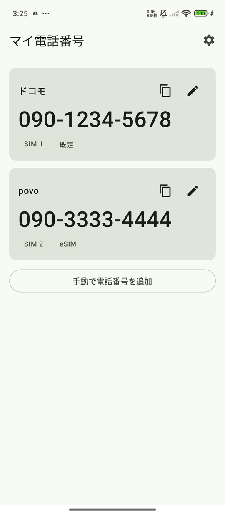
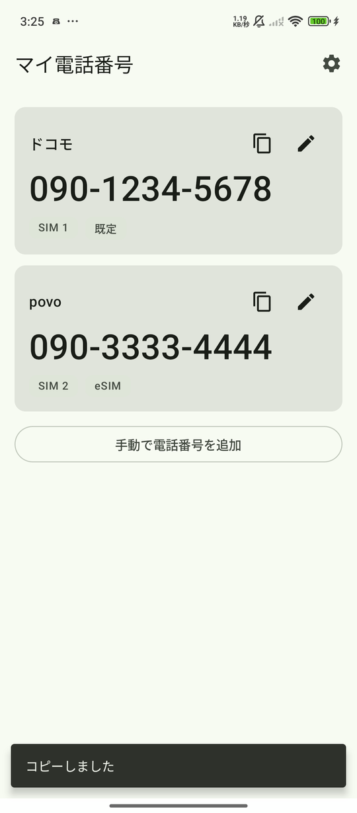
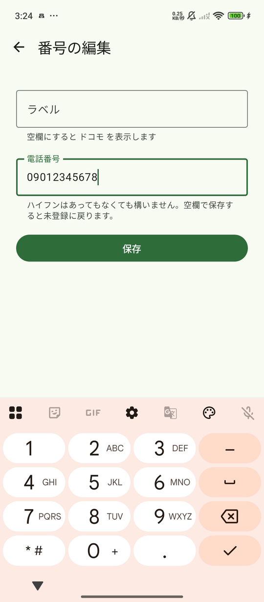
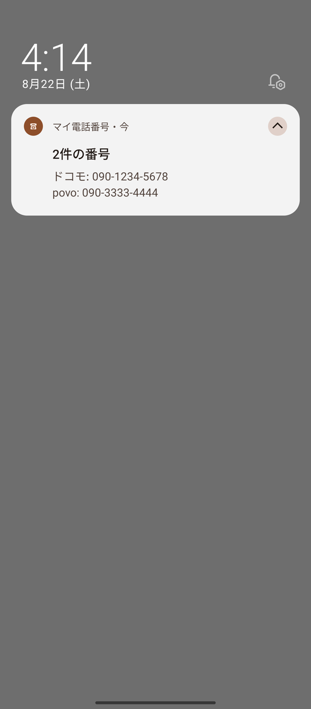

マイ電話番号
「あれ、自分の電話番号なんだったっけ…」をなくします。




画面の番号は説明用のもので、実在しません。
できること
- 有効なSIMの電話番号を一覧で表示します
- ワンタップでクリップボードへコピーできます
- デュアルSIM（DSDS）とeSIMに対応し、どちらの回線かひと目で分かります
- 通知シェードに常時表示できます（オフにもできます）
- クイック設定タイルから素早く確認できます
- 回線ごとに好きな名前を付けられます（「仕事用」「予備」など）
番号が自動で表示されないことがあります
Androidの仕様上、多くのキャリア・格安SIMでは電話番号を自動で取得できません。SIMカードに番号が書き込まれていないためで、アプリの不具合ではありません。
その場合は、一度だけ手で入力してください。以降はこのアプリが覚えているので、次からはすぐ確認できます。ハイフンはあってもなくても構いません。
プライバシー
- 入力された電話番号は端末内にのみ保存され、外部に送信されることはありません
- 広告を一切表示しません
- 利用状況の収集や分析は行いません
- アプリ内購入はありません
- アカウント登録は不要です
詳しくはプライバシーポリシーをご覧ください。
権限について
すべて任意です。許可しなくても、手動で番号を登録すれば全機能を使えます。
電話（SIM情報の読み取り）
有効なSIMが何枚あるかを調べ、番号の自動取得を試すために使います。許可しない場合は、手動で回線を追加して番号を登録できます。
通知
通知シェードに電話番号を表示する場合にのみ使います。音やバイブレーションは鳴りません。ロック画面には番号を表示しません。
対応環境
- Android 8.0以降、電話機能を持つ端末
- 日本語 / English